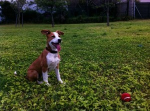
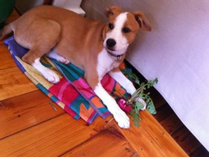

Red Ball
Roxy looking happy in the Obs dog park:

I promise I will try and take more pictures of Roxy awake / doing stuff.
I have been spending a lot of time at my desk recently, and she sleeps next to it.
And is cute.
So, Roxy seemed to love Shekinah Lodge.
She came home very tired*, a bit scratched**, and very happy.
It took her a minute to come out of the Wendy house and say hello because she was so deep asleep!
She seems to have remembered all the basic level training from “before,” but is struggling a bit with the compound command stuff. And this morning she was just mental. “Run! I wish to Run!”
We have finally caved in to her demands and have got her a cellphone.
At least now we can check on her via SMS whenever we want.
What? We’re not mad.
It’s only a Pay As You Go!
Pffft!***
Roxy is now sleeping through night, mostly.
The problem is that rest of The Zoo sets her off.
Sproing likes to “Start Some Shit” or “Set It Off” an hour or half an hour before actual waking up time, and tis wakes up Roxy.
She tends to settle down and go back to sleep after a quick trip outside, though.
House training seems to be pretty much sorted. This is partially because we don’t give her the chance to get it wrong.
When we started getting all these free papers over the wall a while ago, we were happy because we needed them. Now they’re just mounting up in the cupboard because we’re not using them.
My spies tell me that some people read newspapers.
I am intrigued by this.
_____
* – two days. She
basically just slept for two days after she came back. I think she was playing all day long while she was there.
** – a few minor cuts and scrapes that you’d expect from all day rough and tumble on a farm with a bunch of other dogs. I don’t think she even noticed!
***- yes, this paragraph was a “joke.”
Radish!

We left the ‘dish in the ground a little too long and it looked a bit too mutant to eat.
So we gave it to the dog! 
Puppy Class on Saturday went very well.
Roxy performed well, we were proud!
The big trick for the week was Leave It, which, as avid readers will know, she likes a lot.
We also did “Puppy Pushups” – sit, down, sit.
We do do this at home already, so again the test was just about the new place and doggy distractions.
Ran off to the Vet last night and Roxy got more shots, plus a chip of the micro variety.
Now we can find out where she is at weekends if she doesn’t answer her cellphone.

We’re off on Thursday morning for a few days.
We have a house-sitter coming in (Thank you, Lesley!), but we didn’t want to impose dog-sitting.
So, we looked for, and found, a kennel type place.
The place, Shekinah Lodge, is lovely. It’s a farm plot, divided up into little fields.
They put their pups into packs of similar sizes and temperaments, and they run around in their fieldy bits.
Each fieldy bit also has a paddling pool and a big (air-conditioned / heated in summer / winter) wendy house for sleeping.
It’s lush, man!
We will be sad to leave Roxy there, but I’m sure she’ll have lots of fun and the other dogs there looked silly-happy.
We had a bit of a practice on Sunday, actually.
We were out for the day and Anna kindly agreed (thank you!) to let Roxy bounce around with Moneo, her border collie, for the day.
Roxy was apparently fine for a few hours, then had a bit of a cry, then was fine again.
 + (;_;) +
+ (;_;) + 
We took her there at 9 in the morning and picked her up at 5 in the evening, and she was shattered. I think she didn’t stopped playing the whole day.
This bodes well for the kennelling: she will be too tired to miss us!
Puppy Class last week went much better.
For the humans and Roxy!
She still went crazy-play-time with the other dogs (especially a little Miniature Terrier called Knoffel, who Jo snapped a pic of – must remember to grab it. They is bestest fwiends), but she did much better in terms of concentration for the training stuff.
It was kewl!
Proud puppy parents, we were :).
By which I mean: Stay, do some stuff, Unstay.
And: Leave it, do some stuff, Unleaveit.
Not so easy! But she’s getting good at it.
Leave it is still her favourite game.
Favourite variation: Leave It, Down (tentatively), Come (excitedly), OK.
Aside: some of the books recommend praising a good obey with Good + Name of Command.
“Good Come” will never get old :).
Her bed.
And destroying it.
As of a few minutes ago, there is just a mess of material where once there was a comfy bed.
She hasn’t (touch wood!) chowed up anything else, though. At all. Is odd.


{kind=link}
{kind=link}
{kind=link}
{kind=link}